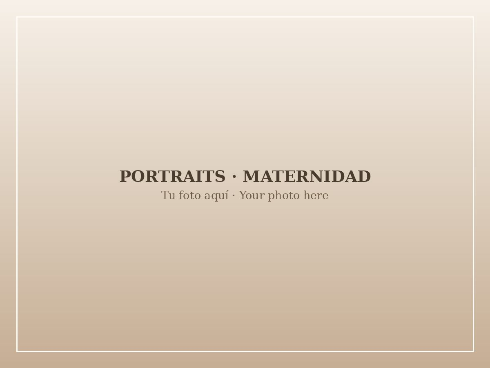
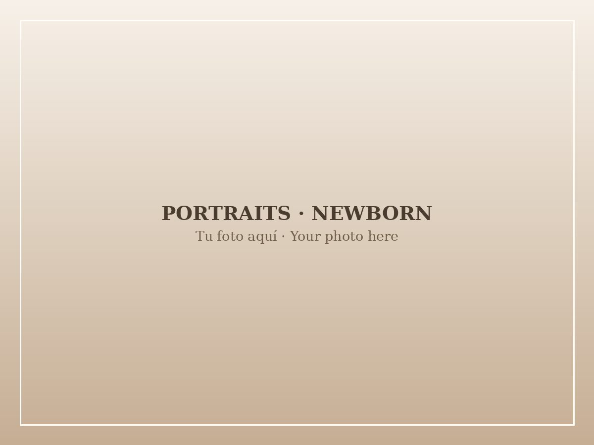
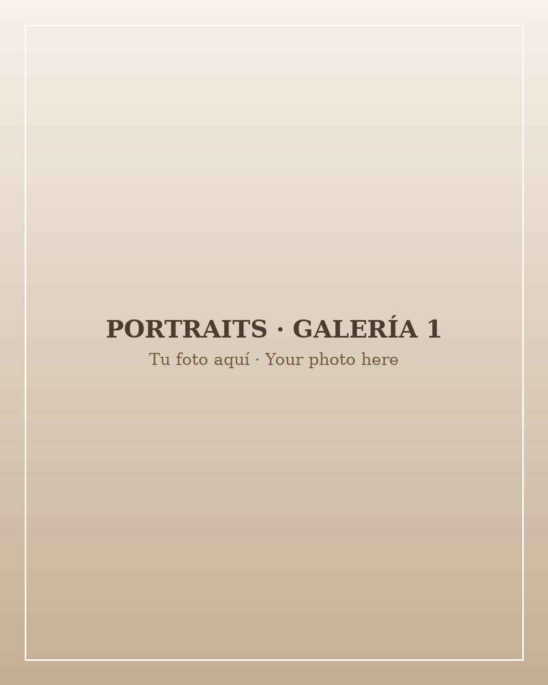
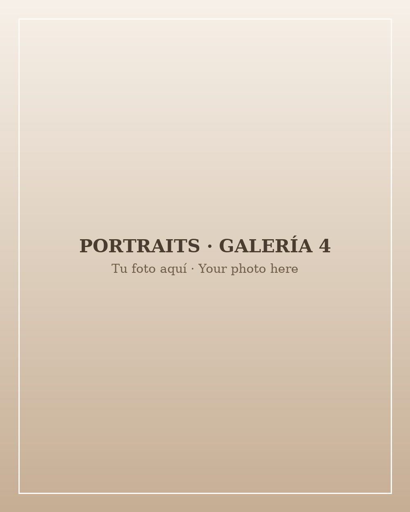

Couples
Romantic, relaxed sessions that capture your chemistry and the quiet moments in between.
Portrait Photography · Utah
Whatever you are celebrating — or simply becoming — it deserves to be remembered well.
Book your portrait sessionPortraits
Portraits are about honoring where you are right now: waiting for a baby, holding a newborn, graduating, falling in love, or simply wanting to be seen as you are. My job is to make the camera feel easy, so the person in the photo is truly you.
Romantic, relaxed sessions that capture your chemistry and the quiet moments in between.

A gentle celebration of the waiting — best in the golden weeks of the third trimester.

Calm, in-home sessions in your baby’s first days, at your family’s pace. Digital gallery included.
Senior and graduation portraits that mark the end of one chapter and the start of the next.
Individual and personal portraits are always available too — just ask.
Portrait gallery


Good to know
This season will not repeat itself
Tell me where life has you right now, and we will turn it into images you will keep forever.
Message me on Instagram